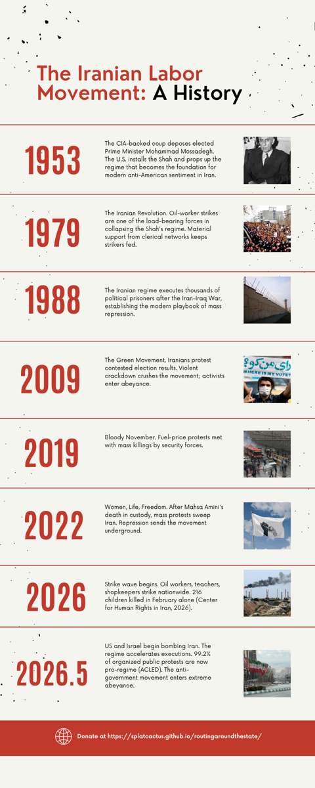

POLS 1365 — Brown University — May 2026
Routing Around the State
Donations are funneled through United for Iran, an Iranian diaspora-led 501(c)(3) operating under OFAC General License E, which permits the transfer of funds for humanitarian relief, bypassing US sanctions that would usually prohibit this.
99.2% of current protests are pro-regime according to ACLED researchers. The rest is in abeyance. Workers are still striking.
The Situation
Iran in 2026: Strike, Repression, and Abeyance
"Survivors of the regime…have nothing left to lose but their chains," writes Nasrin Parvaz of the current situation in Iran, herself having been imprisoned over 40 years ago for speaking up against human rights violations. In February alone, 216 children were reportedly shot by security forces, on top of 6,500+ protestors already killed (Center for Human Rights in Iran, 2026). Thanks to the out-of-control inflation, strikes have reached nationwide participation as of March, including large school strikes by students and teachers (Motamedi, Al Jazeera, 2026).
April executions of political prisoners are only increasing in frequency. With 99.2% of current protests now pro-regime according to ACLED researchers, the government repression campaign is succeeding and forcing many to self-censor (Burke, The Guardian, 2026). The Iranian government describes peaceful activists as "rioters," "Western sympathizers," and "homeland betrayers," even when those activists are elementary school students and teachers participating in peaceful protest (Motamedi, Al Jazeera, 2026).
If a movement has been proven to have a large influence and base of support, but is unable to thrive in the current political environment, "it may enter a period of abeyance, in which a small group of core activists continue to build discursive frames, intramovement solidarity, and movement tactics until the political climate becomes more receptive" (Phelps, Ward, Frazier, 425). This is a very extreme example of abeyance, but it is abeyance nonetheless. The core activists currently holding the movement need more support than ever.
Survivors of the regime have nothing left to lose but their chains.

The Argument
Why the Usual Methods of Support Would Be Suboptimal
The standard ways support is directed through US political channels, broad NGO advocacy, and public protest abroad either worsen the rhetoric of protestors working in favor of "foreign-agents," or do not actually solve the lack of material support these activists have.
State pressure and broad advocacy
The standard ways that support is directed through different political avenues of the US government, whether by lobbying for more favorable foreign policies or direct sanctions on Iran, only reinforce the narrative the authoritarian regime is promoting. As Erica Chenoweth puts it in Civil Resistance, "many authoritarian leaders try to discredit people waging nonviolent struggle by arguing they're run by 'outside agitators' or enemy governments" (136). If US citizens try to convince people in government to do something on the Iranian people's behalf, it only resurfaces the anti-US sentiment within Iran that has been present since the 1953 CIA-backed coup that deposed the elected Prime Minister.
What this looks like: "acting at the enemy's request" — Iranian government statement (Azar, BBC, March 2026)
Public protest abroad
Even if advocacy rooted in awareness efforts could reach the people in Iran, the blackouts being conducted by the regime have caused a digital apartheid in which only pro-government journalists, propagandists, university staff, and the rich have access to the Internet (Ameri, Deutsche Welle, 2026). This makes collaborating with an organization that has contacts in the region especially important, since it can bypass both the "foreign agent" accusations and get resources directly to human rights communities.
What this looks like: "Only pro-government journalists, propagandists, university staff, and the rich have access to the Internet." — Ameri, Deutsche Welle, April 2026
Broad NGO advocacy
Advocacy without organizing (NGO-based or not) is not able to reach the people in Iran who need it most. They further awareness but do not generate material resources to support organizing efforts. As Theda Skocpol explains in Diminished Democracy, civic engagement gets weaker when professional advocacy groups replace organizations that are able to produce resources to actually increase local organizational capacity (69). NGO advocacy and broad public protests are good at being spectator solidarity, but do not produce significant material benefits directly to Iranian activists.
What this looks like: Many in Iran worry of their property being confiscated thanks to their continued participation. — Azar, BBC, March 2026
Now that the basis for material support has been established, the structure that this support should take is the next big hurdle.
Why a Strike Fund
Why a Strike Fund Is the Best Form of Support
Jane McAlevey makes it clear in A Collective Bargain that many times strikes do not fail from a lack of frustration, but rather a lack of resources and organizing. Her examples of strikes that work, like Jamie Rhodes organizing protests against Prospect Medical Holdings for better pay and working conditions at DelCo hospital, went through only after all workers agreed they could handle the lack of pay, and were able to receive food and basic care from local churches and other unionized hospitals (27). While American labor unions are in a different situation than Iranian workers under a repressive government, the idea that people need material resources as a required condition before action holds up in both. However, DelCo hospital workers had a legal right to strike and other support systems in place, but Iranian workers have none of this.
Iranians are currently afraid for their lives in the face of a regime that will not hesitate to shoot them if they are protesting, so one of the safest ways to contribute to the weakening of the regime is to not go to work and not allow the country to function. The strikes have already been underway, but even with resilient backers, they cannot last forever if people are not able to afford basic essentials, like rent. As many in Iran worry of their property being confiscated thanks to their continued participation (Azar, BBC, 2026), this aid can provide relief to those who already have the will to support the anti-government movement.
Material floor
People need material resources as a required condition before action can be held up over a long period of time.
Sustained participation
Even with resilient backers, strikes cannot last forever if people are not able to afford basic essentials, like rent.
Parallel infrastructure
The strike portion of the movement can carry on even under repression, since it does not require a visible movement infrastructure.
How It Works
How Donations Reach Iranian Workers, Legally and Safely
All donations collected will be from individual contributors from all over the country, starting with Brown University. This displays a fundamentally different model of support than donations from any political party or specific ideology-based group: a people-to-people mutual aid framework, not a state-to-movement one.
Donations are funneled through United for Iran, an Iranian diaspora-led 501(c)(3) operating under General License E, which gives it the license to transfer funds in the name of humanitarian relief, bypassing US sanctions that would usually prohibit this. Due to having a specific approval from the Office of Foreign Assets Control, it does not need to apply for case-by-case licensing, a huge benefit for transferring many individual donations over time.
While this donation pathway is still being worked on with United for Iran's team, for now the donations will go toward the current projects for human rights they have set up, helping those within the country further organizing efforts, including projects like development of the Iran Prison Atlas.
All donations come from individual contributors, not from any political party or specific ideology-based group. This displays a fundamentally different model of support than state-directed intervention, and it is the key piece that solves the issue Chenoweth posits about "transporting movements across borders."
Since United for Iran is backed by an organization made up of "Iranian activists and former political prisoners," allied with "in-country activists – be it everyday citizens or movement leaders," they have domestic contacts they can directly support to develop homegrown movements. The diaspora network can support "allies inside Iran who risk their lives every time they speak up" without state involvement at any point.
United for Iran confirmed in April 2026 correspondence that while their updated general OFAC license is under review, General License E provides the current legal basis for conducting this work, permitting certain human rights-related activities in Iran (United for Iran, correspondence, April 2026).
United for Iran is made up of "Iranian activists and former political prisoners," allied with "in-country activists – be it everyday citizens or movement leaders." Because the organization is diaspora-led and does not have to worry about personal safety, they will do whatever they can to help their "allies inside Iran who risk their lives every time they speak up." The allies in Iran who are at risk of speaking out are exactly the people who will benefit from the strike fund being amassed by the donations.
The usual methods of support from abroad, like pressuring the US government and advocacy from NGOs, either worsen the rhetoric of protestors working in favor of "foreign-agents," or do not actually solve the lack of material support these activists have. A small-scale strike fund passed through transnational human rights organizations lays the groundwork to help with both.
Common Questions
Why this and not the obvious moves.
Yes. Donations go to United for Iran, a 501(c)(3) operating under OFAC General License E, which permits certain human rights-related activities in Iran. United for Iran confirmed this legal basis in April 2026 correspondence.
Lobbying for more favorable foreign policies or direct sanctions on Iran only reinforces the narrative the authoritarian regime is promoting. As Erica Chenoweth puts it in Civil Resistance, "many authoritarian leaders try to discredit people waging nonviolent struggle by arguing they're run by 'outside agitators' or enemy governments" (136). US-government involvement resurfaces anti-US sentiment in Iran rooted in the 1953 CIA-backed coup that deposed the elected Prime Minister.
NGO advocacy and broad public protests are good at being spectator solidarity, but do not produce significant material benefits directly to Iranian activists. Even if advocacy rooted in awareness efforts could reach the people in Iran, the regime's blackouts have caused a digital apartheid in which only pro-government journalists, propagandists, university staff, and the rich have access to the Internet (Ameri, Deutsche Welle, 2026).
No. This campaign does not utilize any state actors. All donations come from individual contributors, not from any political party, government body, or armed group. The pipeline runs through United for Iran, a diaspora-led 501(c)(3), to human rights work in Iran.
United for Iran has a specific approval from the Office of Foreign Assets Control under General License E, so it does not need to apply for case-by-case licensing, a huge benefit for transferring many individual donations over time. As an Iranian diaspora-led 501(c)(3), it provides both the legal pathway and the structural distinction from state-to-movement money.
In order to not play into the US intervention narrative, this campaign will not utilize any state actors. The funds go through a diaspora-led organization made up of "Iranian activists and former political prisoners," not US government agencies or politically affiliated NGOs. The end goal is to build up leaders within these Iranian humanitarian communities, allowing them to gather their own followers once they have enough resources to actually organize a movement that is currently being highly threatened.
Take Action
Generate a Strike Fund for Supporting Iranians
Donations are funneled through United for Iran, an Iranian diaspora-led 501(c)(3) operating under OFAC General License E. Anyone who has a dollar to spare can actually contribute. Small contributions from many individuals are the entire model.
Select an amount
Or scan to donate
When people who have nothing left to lose are already fighting as hard as they can, the best step to take is to give them support from one step to the next as they slowly develop this long-term societal transformation.